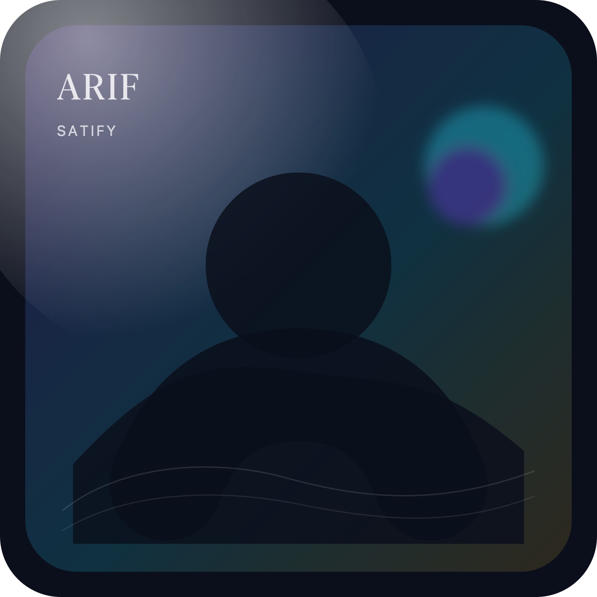

Programming
Web and automation
Development of websites, automation tools, and backend systems. I like fast, readable code and interfaces that feel effortless.
- Responsive UI and components
- APIs, tooling, and scripts
- Performance and polish
Biography
Bangladeshi web developer and digital entrepreneur.
Arif Satify (born 19 March 2007) is the online alias of MD Arif, a Bangladeshi web developer and digital entrepreneur.

"Keep it simple. Ship it. Learn fast."
The basics, plus a bit of personality.
MD Arif
19 March 2007
Wari, Old Dhaka
Bangladeshi
ItzYourBread
English, Bangla, Hindi
Web development, online communities, and digital media projects. I like shipping fast, learning from mistakes, and rebuilding with better systems.
A detailed background story.
Arif Satify (born 19 March 2007) is the online alias of MD Arif, a Bangladeshi web developer and digital entrepreneur. He was born in Wari, Old Dhaka, Bangladesh, near Joy Kali Mandir, into the Rahman family. His father is MD Abdur Rahman and his mother is Baby Begum. He is the third child in the family.
Arif's elder brother, Alamin, passed away in a motorcycle accident near Mawa Ghat. His sister Sarmin Akter, later known as Disha Ahmmed after marriage, is married to Shakil Ahmmed.
Arif spent his early childhood in Wari and began his education at Wari School, studying from kindergarten to second grade. In 2016 he transferred to Silverdale Preparatory And Girls' High School, where he continued briefly before leaving again. Around 2019-2020 he attended another small private apartment-based school near Bikrampur Auto Parts Market, though he later discontinued formal education.
During his childhood, roughly between the ages of 7 and 14, Arif developed an interest in creativity and making small handmade objects. He often used paper and cardboard to build miniature items and experimental crafts. Inspired by DIY videos from 5-Minute Crafts and various Indian television craft programs, he spent much of his free time designing and assembling tiny creative projects at home. This early habit of experimenting with materials and ideas helped shape his curiosity for creating things independently.
As a child (around ages 7 to 12), he also spent a lot of time watching cartoons. One of his favorites was Doraemon, which he watched frequently and credits for helping him gradually learn to understand and speak some Hindi. His other favorites included Shin Chan and Ninja Hattori-kun.
Around the ages of 10 to 16, he also spent much of his leisure time watching the Indian Disney sitcom Best of Luck Nikki from Disney Channel India on YouTube, which he remembers as one of his favorite shows during his teenage years.
Between 2018 and 2022, Arif spent much of his time gaming, initially on a phone and later transitioning to laptops and PCs around late 2019. During the COVID-19 pandemic, his father's chicken meat business suffered a major collapse, resulting in a financial loss of around 40 lakh BDT and bankruptcy. Due to financial and social pressures, including issues involving the Bangladesh Awami League, the family relocated in April 2021 to the Hazaribagh tannery area in Dhanmondi.
From 2021 to 2023 the family experienced serious financial hardship. Recovery gradually began through side hustles organized by Arif's sister and brother-in-law, along with assistance from a friend of his late brother.
On 19 March 2023, Arif started a small online adult entertainment community on Discord that eventually reached around 9,000 members before being banned due to moderation mistakes. Later, around late 2023 and early 2024, he began generating online revenue through advertising platforms such as AdMaven and Linkvertise. Payment handling was supported by a close friend from Mauritius, Anthonio Cassim, whom Arif credits as an important supporter during that period.
Through a project known as WatchNSFW, Arif reports earning approximately $3,000-$4,000 USD between December 2023 and October 2025. Revenue later declined to roughly $30-$50 per month due to reduced traffic and investor withdrawal, but the project continues to operate as he works on rebuilding and expanding his online ventures.
Arif remains single and continues experimenting with websites, online communities, and digital media projects under the public name Arif Satify.
My study journey and what I'm learning now.
Self-learning + projects
Wari School (KG to grade 2)
Silverdale Preparatory And Girls' High School (2016)
Software engineering
I began my education at Wari School (kindergarten to second grade). In 2016 I transferred to Silverdale Preparatory And Girls' High School, then later attended a small private apartment-based school near Bikrampur Auto Parts Market around 2019-2020. After that I discontinued formal education and focused on self-learning through real projects.
A short introduction to my family background.
MD Abdur Rahman and Baby Begum
Third child in the family
Wari, Old Dhaka, Bangladesh
Rahman family
My elder brother Alamin passed away in a motorcycle accident near Mawa Ghat. My sister Sarmin Akter (later known as Disha Ahmmed after marriage) is married to Shakil Ahmmed.
A short path so far. Add or edit events anytime.
Born in Wari, Old Dhaka, Bangladesh (near Joy Kali Mandir).
Transferred to Silverdale Preparatory And Girls' High School.
Spent significant time gaming, moving from phone to laptop/PC around late 2019.
During COVID-19, my father's chicken meat business collapsed, causing around 40 lakh BDT in losses and bankruptcy.
Relocated to the Hazaribagh tannery area in Dhanmondi.
The family went through serious hardship, then gradually recovered through side hustles and help from close people.
Started building online communities and website projects more seriously.
Started an adult entertainment community that grew to around 9,000 members, then was banned due to moderation mistakes.
Began earning online via AdMaven and Linkvertise, and later built WatchNSFW. Arif reports earning about $3,000-$4,000 USD (Dec 2023 to Oct 2025), later declining to roughly $30-$50 per month.
A mix of coding, community, and online experiments.
Web and automation
Development of websites, automation tools, and backend systems. I like fast, readable code and interfaces that feel effortless.
Ads and traffic
Experiments with advertising platforms, traffic monetization, and rebuilding projects over time. I focus on learning what works, then improving the system.
Web presence
Building online communities, experimenting with content, and improving branding across platforms. The goal is to make pages that feel clear and alive.
Click any card for a closer look.
Replace these with your real profiles.